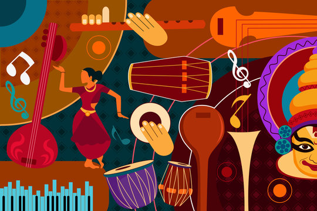

It must be interesting how Bhartiya Shastriya Sangeet (Indian Classical music) has developed. It is one where the two most important aspects of life are blissfully amalgamated: freedom and restraint. In addition, it incorporates all emotions and doesn't brand one superior to the other — for example, Raag Deepak represents vexation. Only something that has evolved for hundreds of years can be intense and intricate yet simple enough to be fed to a child's brain.

Another idiosyncrasy of Bhartiya Shastriya Sangeet is improvisation. While this particular element is also seen in Western forms of music like Jazz and Blues, it plays out very differently for Indian Classical music solely because of the use of extensive portamento — moving through all intermediate frequencies between two notes. Improvisation, purely because of this feature, allows a greater blend of the performer's persona into the music. While AI will supposedly compose symphonies in the near future, I am of the opinion that the prospects of Shastriya Sangeet artists — just because of Meend and Gamak (styles of portamento) — are fairly secure.
For a long time, Kolkata has been the hub of Indian Classical music, with exponents of vocal, tabla, sitar, sarod, esraj, and several other instruments having their bases here. The Chowdhury family in Ballygunge has been the torch-bearing patron of world-class artists like Baba Alauddin Khan, who gave tutelage to the next generation of maestros including Pt. Nikhil Banerjee, Ud. Ali Akbar Khan and Pt. Ravi Shankar. Carrying on their legacy, the Chowdhury House Music Conference is held every winter and is not to be missed by any enthusiast.
I had missed Ud. Shahid Parvez's performance in Toronto in October. Now that I was home for the winter holidays, it only made sense to take the opportunity to witness greatness at home ground. Few people appreciate the depth of Shastriya Sangeet, more so in the current generation and even abroad. It was my only chance to regale in something I love amongst true appreciators of the art.
The performances
I reached right before the conclusion of a violin recital in Vrindavani Sarang.
This was followed by Raag Marwa, deftly rendered by Amzad Hossain on the sitar and Emon Sarkar on the tabla. Emon appeared to be a rising star in the tabla repertoire with his bold and immersive play style. Amzad Hossain startled the audience with intense Gamak which made the performance Dhrupad-like, although I am not learned enough to make a technical comment. Laykari was another notable characteristic feature of his playing.
Subsequently, Raag Jog filled the hall as Rosy Datta set the stage with some glides from Shuddh to Komal Gandhar. Sukhwinder Singh Pinky gave the tabla accompaniment — someone I was waiting to watch live. I had seen his performances for the Darbar festival before, and very rightly, he surpassed all the expectations of the crowd. His composed hold on the instrument, interspersed with electrifying tehais, blew all our minds collectively. What a personality! Rosy Datta complemented him well with swift taans towards the end of the performance, which she concluded with a small bandish in Raag Kedar.
The highlight of the evening was Raag Gorakh Kalyan by Dr. N. Rajam and Sangeeta Shankar, with Akram Khan as their tabla support. Dr. Rajam, at age 86, effortlessly merged soul-writhingly sweet taans at sam, with able Sangat from her daughter. She was a miracle to behold — and it was even more special for me because she is indirectly the reason I picked up the violin through my Uncle's interest in the instrument. On request, she finished the presentation with a Banarasi dadra in Khamaj, which to me sounded like the Manna De song, 'Oke aaj chole jete bol na'. The violin music re-emphasised the importance of pauses and cadences, especially in light classical music.
The final performance was in Raag Yaman by Shakir Khan, the successor to Ud. Shahid Parvez. There goes a saying in Hindi: "Baap ka beta, sipahi ka ghoda" — roughly, "Son is to father, as a horse is to a warrior." Nothing could be more appropriate for the artist! Featuring long sustains and lightning-fast taans along with extreme laykari, Shakir put every last member of the audience in awe. The final ending was in a bandish in Piloo composed by the legendary Ud. Vilayat Khan, with an interesting modification with the usual Komal Gandhar.
Thus ended an evening of music and mirth.
All aside, it was also so beautiful to see multiple religions on the same stage united by soulful, introspective music. However, it was also a little sad to see that some people were not respectful towards the artists and kept talking while seated in the audience — I had to raise my voice twice to request them to stop.
Not an ounce of tension in the eyes of the performers!